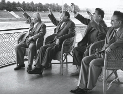
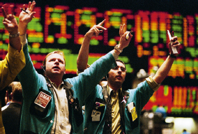

Dataism says that the universe consists of data flows, and the value of any phenomenon or entity is determined by its contribution to data processing.1 This may strike you as some eccentric fringe notion, but in fact it has already conquered most of the scientific establishment. Dataism was born from the explosive confluence of two scientific tidal waves. In the 150 years since Charles Darwin published On the Origin of Species, the life sciences have come to see organisms as biochemical algorithms. Simultaneously, in the eight decades since Alan Turing formulated the idea of a Turing Machine, computer scientists have learned to engineer increasingly sophisticated electronic algorithms. Dataism puts the two together, pointing out that exactly the same mathematical laws apply to both biochemical and electronic algorithms. Dataism thereby collapses the barrier between animals and machines, and expects electronic algorithms to eventually decipher and outperform biochemical algorithms.
For politicians, business people and ordinary consumers, Dataism offers groundbreaking technologies and immense new powers. For scholars and intellectuals it also promises to provide the scientific holy grail that has eluded us for centuries: a single overarching theory that unifies all the scientific disciplines from literature and musicology to economics and biology. According to Dataism, King Lear and the flu virus are just two patterns of data flow that can be analysed using the same basic concepts and tools. This idea is extremely attractive. It gives all scientists a common language, builds bridges over academic rifts and easily exports insights across disciplinary borders. Musicologists, political scientists and cell biologists can finally understand each other.
In the process, Dataism inverts the traditional pyramid of learning. Hitherto, data was seen as only the first step in a long chain of intellectual activity. Humans were supposed to distil data into information, information into knowledge, and knowledge into wisdom. However, Dataists believe that humans can no longer cope with the immense flows of data, hence they cannot distil data into information, let alone into knowledge or wisdom. The work of processing data should therefore be entrusted to electronic algorithms, whose capacity far exceeds that of the human brain. In practice, this means that Dataists are sceptical about human knowledge and wisdom, and prefer to put their trust in Big Data and computer algorithms.
Dataism is most firmly entrenched in its two mother disciplines: computer science and biology. Of the two, biology is the more important. It was the biological embracement of Dataism that turned a limited breakthrough in computer science into a world-shattering cataclysm that may completely transform the very nature of life. You may not agree with the idea that organisms are algorithms, and that giraffes, tomatoes and human beings are just different methods for processing data. But you should know that this is current scientific dogma, and that it is changing our world beyond recognition.
Not only individual organisms are seen today as data-processing systems, but also entire societies such as beehives, bacteria colonies, forests and human cities. Economists increasingly interpret the economy, too, as a data-processing system. Laypeople believe that the economy consists of peasants growing wheat, workers manufacturing clothes, and customers buying bread and underpants. Yet experts see the economy as a mechanism for gathering data about desires and abilities, and turning this data into decisions.
According to this view, free-market capitalism and state-controlled communism aren’t competing ideologies, ethical creeds or political institutions. At bottom, they are competing data-processing systems. Capitalism uses distributed processing, whereas communism relies on centralised processing. Capitalism processes data by directly connecting all producers and consumers to one another, and allowing them to exchange information freely and make decisions independently. For example, how do you determine the price of bread in a free market? Well, every bakery may produce as much bread as it likes, and charge for it as much as it wants. The customers are equally free to buy as much bread as they can afford, or take their business to the competitor. It isn’t illegal to charge $1,000 for a baguette, but nobody is likely to buy it.
On a much grander scale, if investors predict increased demand for bread, they will buy shares of biotech firms that genetically engineer more prolific wheat strains. The inflow of capital will enable the firms to speed up their research, thereby providing more wheat faster, and averting bread shortages. Even if one biotech giant adopts a flawed theory and reaches an impasse, its more successful competitors will achieve the hoped-for breakthrough. Free-market capitalism thus distributes the work of analysing data and making decisions between many independent but interconnected processors. As the Austrian economics guru Friedrich Hayek explained, ‘In a system in which the knowledge of the relevant facts is dispersed among many people, prices can act to coordinate the separate actions of different people.’2
According to this view, the stock exchange is the fastest and most efficient data-processing system humankind has so far created. Everyone is welcome to join, if not directly then through their banks or pension funds. The stock exchange runs the global economy, and takes into account everything that happens all over the planet – and even beyond it. Prices are influenced by successful scientific experiments, by political scandals in Japan, by volcanic eruptions in Iceland and even by irregular activities on the surface of the sun. In order for the system to run smoothly, as much information as possible needs to flow as freely as possible. When millions of people throughout the world have access to all the relevant information, they determine the most accurate price of oil, of Hyundai shares and of Swedish government bonds by buying and selling them. It has been estimated that the stock exchange needs just fifteen minutes of trade to determine the influence of a New York Times headline on the prices of most shares.3
Data-processing considerations also explain why capitalists favour lower taxes. Heavy taxation means that a large part of all available capital accumulates in one place – the state coffers – and consequently more and more decisions have to be made by a single processor, namely the government. This creates an overly centralised data-processing system. In extreme cases, when taxes are exceedingly high, almost all capital ends up in the government’s hands, and so the government alone calls the shots. It dictates the price of bread, the location of bakeries, and the research-and-development budget. In a free market, if one processor makes a wrong decision, others will be quick to utilise its mistake. However, when a single processor makes almost all the decisions, mistakes can be catastrophic.
This extreme situation in which all data is processed and all decisions are made by a single central processor is called communism. In a communist economy, people allegedly work according to their abilities, and receive according to their needs. In other words, the government takes 100 per cent of your profits, decides what you need and then supplies these needs. Though no country ever realised this scheme in its extreme form, the Soviet Union and its satellites came as close as they could. They abandoned the principle of distributed data processing, and switched to a model of centralised data processing. All information from throughout the Soviet Union flowed to a single location in Moscow, where all the important decisions were made. Producers and consumers could not communicate directly, and had to obey government orders.

The Soviet leadership in Moscow, 1963: centralised data processing.
© ITAR-TASS Photo Agency/Alamy Stock Photo.
For instance, the Soviet economics ministry might decide that the price of bread in all shops should be exactly two roubles and four kopeks, that a particular kolkhoz in the Odessa oblast should switch from growing wheat to raising chickens, and that the Red October bakery in Moscow should produce 3.5 million loaves of bread per day, and not a single loaf more. Meanwhile the Soviet science ministry forced all Soviet biotech laboratories to adopt the theories of Trofim Lysenko – the infamous head of the Lenin Academy for Agricultural Sciences. Lysenko rejected the dominant genetic theories of his day. He insisted that if an organism acquired some new trait during its lifetime, this quality could pass directly to its descendants. This idea flew in the face of Darwinian orthodoxy, but it dovetailed nicely with communist educational principles. It implied that if you could train wheat plants to withstand cold weather, their progenies will also be cold-resistant. Lysenko accordingly sent billions of counter-revolutionary wheat plants to be re-educated in Siberia – and the Soviet Union was soon forced to import more and more flour from the United States.4

Commotion on the floor of the Chicago Board of Trade: distributed data processing.
© Jonathan Kirn/Getty Images.
Capitalism did not defeat communism because capitalism was more ethical, because individual liberties are sacred or because God was angry with the heathen communists. Rather, capitalism won the Cold War because distributed data processing works better than centralised data processing, at least in periods of accelerating technological changes. The central committee of the Communist Party just could not deal with the rapidly changing world of the late twentieth century. When all data is accumulated in one secret bunker, and all important decisions are taken by a group of elderly apparatchiks, you can produce nuclear bombs by the cartload, but you won’t get an Apple or a Wikipedia.
There is a story (probably apocryphal, like most good stories) that when Mikhail Gorbachev tried to resuscitate the moribund Soviet economy, he sent one of his chief aids to London to find out what Thatcherism was all about, and how a capitalist system actually functioned. The hosts took their Soviet visitor on a tour of the City, of the London stock exchange and of the London School of Economics, where he had lengthy talks with bank managers, entrepreneurs and professors. After a few hours, the Soviet expert burst out: ‘Just one moment, please. Forget about all these complicated economic theories. We have been going back and forth across London for a whole day now, and there’s one thing I cannot understand. Back in Moscow, our finest minds are working on the bread supply system, and yet there are such long queues in every bakery and grocery store. Here in London live millions of people, and we have passed today in front of many shops and supermarkets, yet I haven’t seen a single bread queue. Please take me to meet the person in charge of supplying bread to London. I must learn his secret.’ The hosts scratched their heads, thought for a moment, and said: ‘Nobody is in charge of supplying bread to London.’
That’s the capitalist secret of success. No central processing unit monopolises all the data on the London bread supply. The information flows freely between millions of consumers and producers, bakers and tycoons, farmers and scientists. Market forces determine the price of bread, the number of loaves baked each day and the research-and-development priorities. If market forces make the wrong decision, they soon correct themselves, or so capitalists believe. For our current purposes, it doesn’t matter whether the theory is correct. The crucial thing is that the theory understands economics in terms of data processing.
Where Has All the Power Gone?
Political scientists also increasingly interpret human political structures as data-processing systems. Like capitalism and communism, so democracies and dictatorships are in essence competing mechanisms for gathering and analysing information. Dictatorships use centralised processing methods, whereas democracies prefer distributed processing. In the last decades democracy gained the upper hand because under the unique conditions of the late twentieth century, distributed processing worked better. Under alternative conditions – those prevailing in the ancient Roman Empire, for instance – centralised processing had an edge, which is why the Roman Republic fell and power shifted from the Senate and popular assemblies into the hands of a single autocratic emperor.
This implies that as data-processing conditions change again in the twenty-first century, democracy might decline and even disappear. As both the volume and speed of data increase, venerable institutions like elections, parties and parliaments might become obsolete – not because they are unethical, but because they don’t process data efficiently enough. These institutions evolved in an era when politics moved faster than technology. In the nineteenth and twentieth centuries, the Industrial Revolution unfolded slowly enough for politicians and voters to remain one step ahead of it and regulate and manipulate its course. Yet whereas the rhythm of politics has not changed much since the days of steam, technology has switched from first gear to fourth. Technological revolutions now outpace political processes, causing MPs and voters alike to lose control.
The rise of the Internet gives us a taste of things to come. Cyberspace is now crucial to our daily lives, our economy and our security. Yet the critical choices between alternative web designs weren’t taken through a democratic political process, even though they involved traditional political issues such as sovereignty, borders, privacy and security. Did you ever vote about the shape of cyberspace? Decisions made by web designers far from the public limelight mean that today the Internet is a free and lawless zone that erodes state sovereignty, ignores borders, abolishes privacy and poses perhaps the most formidable global security risk. Whereas a decade ago it hardly registered on the radar, today hysterical officials are predicting an imminent cyber 9/11.
Governments and NGOs consequently conduct intense debates about restructuring the Internet, but it is much harder to change an existing system than to intervene at its inception. Besides, by the time the cumbersome government bureaucracy makes up its mind about cyber regulation, the Internet has morphed ten times. The governmental tortoise cannot keep up with the technological hare. It is overwhelmed by data. The NSA may be spying on your every word, but to judge by the repeated failures of American foreign policy, nobody in Washington knows what to do with all the data. Never in history did a government know so much about what’s going on in the world – yet few empires have botched things up as clumsily as the contemporary United States. It’s like a poker player who knows what cards his opponents hold, yet somehow still manages to lose round after round.
In the coming decades, it is likely that we will see more Internet-like revolutions, in which technology steals a march on politics. Artificial intelligence and biotechnology might soon overhaul our societies and economies – and our bodies and minds too – but they are hardly a blip on our political radar. Our current democratic structures just cannot collect and process the relevant data fast enough, and most voters don’t understand biology and cybernetics well enough to form any pertinent opinions. Hence traditional democratic politics loses control of events, and fails to provide us with meaningful visions for the future.
That doesn’t mean we will go back to twentieth-century-style dictatorships. Authoritarian regimes seem to be equally overwhelmed by the pace of technological development and the speed and volume of the data flow. In the twentieth century, dictators had grand visions for the future. Communists and fascists alike sought to completely destroy the old world and build a new world in its place. Whatever you think about Lenin, Hitler or Mao, you cannot accuse them of lacking vision. Today it seems that leaders have a chance to pursue even grander visions. While communists and Nazis tried to create a new society and a new human with the help of steam engines and typewriters, today’s prophets could rely on biotechnology and super-computers.
In science-fiction films, ruthless Hitler-like politicians are quick to pounce on such new technologies, putting them in the service of this or that megalomaniac political ideal. Yet flesh-and-blood politicians in the early twenty-first century, even in authoritarian countries such as Russia, Iran or North Korea, are nothing like their Hollywood counterparts. They don’t seem to plot any Brave New World. The wildest dreams of Kim Jong-un and Ali Khamenei don’t go much beyond atom bombs and ballistic missiles: that is so 1945. Putin’s aspirations seem confined to rebuilding the old Soviet zone, or the even older tsarist empire. Meanwhile in the USA, paranoid Republicans accuse Barack Obama of being a ruthless despot hatching conspiracies to destroy the foundations of American society – yet in eight years of presidency he barely managed to pass a minor health-care reform. Creating new worlds and new humans is far beyond his agenda.
Precisely because technology is now moving so fast, and parliaments and dictators alike are overwhelmed by data they cannot process quickly enough, present-day politicians are thinking on a far smaller scale than their predecessors a century ago. In the early twenty-first century, politics is consequently bereft of grand visions. Government has become mere administration. It manages the country, but it no longer leads it. It makes sure teachers are paid on time and sewage systems don’t overflow, but it has no idea where the country will be in twenty years.
To some extent, this is a very good thing. Given that some of the big political visions of the twentieth century led us to Auschwitz, Hiroshima and the Great Leap Forward, maybe we are better off in the hands of petty-minded bureaucrats. Mixing godlike technology with megalomaniac politics is a recipe for disaster. Many neo-liberal economists and political scientists argue that it is best to leave all the important decisions in the hands of the free market. They thereby give politicians the perfect excuse for inaction and ignorance, which are reinterpreted as profound wisdom. Politicians find it convenient to believe that the reason they don’t understand the world is that they need not understand it.
Yet mixing godlike technology with myopic politics also has its downside. Lack of vision isn’t always a blessing, and not all visions are necessarily bad. In the twentieth century, the dystopian Nazi vision did not fall apart spontaneously. It was defeated by the equally grand visions of socialism and liberalism. It is dangerous to trust our future to market forces, because these forces do what’s good for the market rather than what’s good for humankind or for the world. The hand of the market is blind as well as invisible, and left to its own devices it may fail to do anything about the threat of global warming or the dangerous potential of artificial intelligence.
Some people believe that there is somebody in charge after all. Not democratic politicians or autocratic despots, but rather a small coterie of billionaires who secretly run the world. But such conspiracy theories never work, because they underestimate the complexity of the system. A few billionaires smoking cigars and drinking Scotch in some back room cannot possibly understand everything happening on the globe, let alone control it. Ruthless billionaires and small interest groups flourish in today’s chaotic world not because they read the map better than anyone else, but because they have very narrow aims. In a chaotic system, tunnel vision has its advantages, and the billionaires’ power is strictly proportional to their goals. If the world’s richest man would like to make another billion dollars he could easily game the system in order to achieve his goal. In contrast, if he would like to reduce global inequality or stop global warming, even he won’t be able to do it, because the system is far too complex.
Yet power vacuums seldom last long. If in the twenty-first century traditional political structures can no longer process the data fast enough to produce meaningful visions, then new and more efficient structures will evolve to take their place. These new structures may be very different from any previous political institutions, whether democratic or authoritarian. The only question is who will build and control these structures. If humankind is no longer up to the task, perhaps it might give somebody else a try.
History in a Nutshell
From a Dataist perspective, we may interpret the entire human species as a single data-processing system, with individual humans serving as its chips. If so, we can also understand the whole of history as a process of improving the efficiency of this system, through four basic methods:
1. Increasing the number of processors. A city of 100,000 people has more computing power than a village of 1,000 people.
2. Increasing the variety of processors. Different processors may use diverse ways to calculate and analyse data. Using several kinds of processors in a single system may therefore increase its dynamism and creativity. A conversation between a peasant, a priest and a physician may produce novel ideas that would never emerge from a conversation between three hunter-gatherers.
3. Increasing the number of connections between processors. There is little point in increasing the mere number and variety of processors if they are poorly connected to each other. A trade network linking ten cities is likely to result in many more economic, technological and social innovations than ten isolated cities.
4. Increasing the freedom of movement along existing connections. Connecting processors is hardly useful if data cannot flow freely. Just building roads between ten cities won’t be very useful if they are plagued by robbers, or if some autocratic despot doesn’t allow merchants and travellers to move as they wish.
These four methods often contradict one another. The greater the number and variety of processors, the harder it is to freely connect them. The construction of the Sapiens data-processing system accordingly passed through four main stages, each characterised by an emphasis on different methods.
The first stage began with the Cognitive Revolution, which made it possible to connect unlimited numbers of Sapiens into a single data-processing network. This gave Sapiens a crucial advantage over all other human and animal species. While there is a strict limit to the number of Neanderthals, chimpanzees or elephants you can connect to the same net, there is no limit to the number of Sapiens.
Sapiens used their advantage in data processing to overrun the entire world. However, as they spread into different lands and climates they lost touch with one another, and underwent diverse cultural transformations. The result was an immense variety of human cultures, each with its own lifestyle, behaviour patterns and world view. Hence the first phase of history involved an increase in the number and variety of human processors, at the expense of connectivity: 20,000 years ago there were many more Sapiens than 70,000 years ago, and Sapiens in Europe processed information differently to Sapiens in China. However, there were no connections between people in Europe and China, and it would have seemed utterly impossible that all Sapiens may one day be part of a single data-processing web.
The second stage began with the Agricultural Revolution and continued until the invention of writing and money about 5,000 years ago. Agriculture speeded demographic growth, so the number of human processors rose sharply. Simultaneously, agriculture enabled many more people to live together in the same place, thereby generating dense local networks that contained an unprecedented number of processors. In addition, agriculture created new incentives and opportunities for different networks to trade and communicate with one another. Nevertheless, during the second phase centrifugal forces remained predominant. In the absence of writing and money, humans could not establish cities, kingdoms or empires. Humankind was still divided into innumerable little tribes, each with its own lifestyle and world view. Uniting the whole of humankind was not even a fantasy.
The third stage kicked off with the invention of writing and money about 5,000 years ago, and lasted until the beginning of the Scientific Revolution. Thanks to writing and money, the gravitational field of human cooperation finally overpowered the centrifugal forces. Human groups bonded and merged to form cities and kingdoms. Political and commercial links between different cities and kingdoms also tightened. At least since the first millennium BC – when coinage, empires and universal religions appeared – humans began to consciously dream about forging a single network that would encompass the entire globe.
This dream became a reality during the fourth and last stage of history, which began around 1492. Early modern explorers, conquerors and traders wove the first thin threads that encompassed the whole world. In the late modern period these threads were made stronger and denser, so that the spider’s web of Columbus’s days became the steel and asphalt grid of the twenty-first century. Even more importantly, information was allowed to flow increasingly freely along this global grid. When Columbus first hooked up the Eurasian net to the American net, only a few bits of data could cross the ocean each year, running the gauntlet of cultural prejudices, strict censorship and political repression. But as the years went by, the free market, the scientific community, the rule of law and the spread of democracy all helped to lift the barriers. We often imagine that democracy and the free market won because they were ‘good’. In truth, they won because they improved the global data-processing system.
So over the last 70,000 years humankind first spread out, then separated into distinct groups, and finally merged again. Yet the process of unification did not take us back to the beginning. When the different human groups fused into the global village of today, each brought along its unique legacy of thoughts, tools and behaviours, which it collected and developed along the way. Our modern larders are now stuffed with Middle Eastern wheat, Andean potatoes, New Guinean sugar and Ethiopian coffee. Similarly, our language, religion, music and politics are replete with heirlooms from across the planet.5
If humankind is indeed a single data-processing system, what is its output? Dataists would say that its output will be the creation of a new and even more efficient data-processing system, called the Internet-of-All-Things. Once this mission is accomplished, Homo sapiens will vanish.
Information Wants to be Free
Like capitalism, Dataism too began as a neutral scientific theory, but is now mutating into a religion that claims to determine right and wrong. The supreme value of this new religion is ‘information flow’. If life is the movement of information, and if we think that life is good, it follows that we should extend, deepen and spread the flow of information in the universe. According to Dataism, human experiences are not sacred and Homo sapiens isn’t the apex of creation or a precursor of some future Homo deus. Humans are merely tools for creating the Internet-of-All-Things, which may eventually spread out from planet Earth to cover the whole galaxy and even the whole universe. This cosmic data-processing system would be like God. It will be everywhere and will control everything, and humans are destined to merge into it.
This vision is reminiscent of some traditional religious visions. Thus Hindus believe that humans can and should merge into the universal soul of the cosmos – the atman. Christians believe that after death saints are filled by the infinite grace of God, whereas sinners cut themselves off from His presence. Indeed, in Silicon Valley the Dataist prophets consciously use traditional messianic language. For example, Ray Kurzweil’s book of prophecies is called The Singularity is Near, echoing John the Baptist’s cry: ‘the kingdom of heaven is near’ (Matthew 3:2).
Dataists explain to those who still worship flesh-and-blood mortals that they are overly attached to outdated technology. Homo sapiens is an obsolete algorithm. After all, what’s the advantage of humans over chickens? Only that in humans information flows in much more complex patterns than in chickens. Humans absorb more data, and process it using better algorithms. (In day-to-day language that means that humans allegedly have deeper emotions and superior intellectual abilities. But remember that according to current biological dogma, emotions and intelligence are just algorithms.) Well then, if we could create a data-processing system that absorbs even more data than a human being, and that processes it even more efficiently, wouldn’t that system be superior to a human in exactly the same way that a human is superior to a chicken?
Dataism isn’t limited to idle prophecies. Like every religion, it has its practical commandments. First and foremost, a Dataist ought to maximise data flow by connecting to more and more media, and producing and consuming more and more information. Like other successful religions, Dataism is also missionary. Its second commandment is to connect everything to the system, including heretics who don’t want to be connected. And ‘everything’ means more than just humans. It means every thing. My body, of course, but also the cars on the street, the refrigerators in the kitchen, the chickens in their coop and the trees in the jungle – all should be connected to the Internet-of-All-Things. The refrigerator will monitor the number of eggs in the drawer, and inform the chicken coop when a new shipment is needed. The cars will talk with one another, and the trees in the jungle will report on the weather and on carbon dioxide levels. We mustn’t leave any part of the universe disconnected from the great web of life. Conversely, the greatest sin is to block the data flow. What is death, if not a situation when information doesn’t flow? Hence Dataism upholds the freedom of information as the greatest good of all.
People rarely manage to come up with a completely new value. The last time this happened was in the eighteenth century, when the humanist revolution preached the stirring ideals of human liberty, human equality and human fraternity. Since 1789, despite numerous wars, revolutions and upheavals, humans have not managed to come up with any new value. All subsequent conflicts and struggles have been conducted either in the name of the three humanist values, or in the name of even older values such as obeying God or serving the nation. Dataism is the first movement since 1789 that created a really novel value: freedom of information.
We mustn’t confuse freedom of information with the old liberal ideal of freedom of expression. Freedom of expression was given to humans, and protected their right to think and say what they wished – including their right to keep their mouths shut and their thoughts to themselves. Freedom of information, in contrast, is not given to humans. It is given to information. Moreover, this novel value may impinge on the traditional freedom of expression, by privileging the right of information to circulate freely over the right of humans to own data and to restrict its movement.
On 11 January 2013, Dataism got its first martyr when Aaron Swartz, a twenty-six-year-old American hacker, committed suicide in his apartment. Swartz was a rare genius. At fourteen, he helped develop the crucial RSS protocol. Swartz was also a firm believer in the freedom of information. In 2008 he published the ‘Guerilla Open Access Manifesto’ that demanded a free and unlimited flow of information. Swartz said that ‘We need to take information, wherever it is stored, make our copies and share them with the world. We need to take stuff that’s out of copyright and add it to the archive. We need to buy secret databases and put them on the Web. We need to download scientific journals and upload them to file sharing networks. We need to fight for Guerilla Open Access.’
Swartz was as good as his word. He became annoyed with the JSTOR digital library for charging its customers. JSTOR holds millions of scientific papers and studies, and believes in the freedom of expression of scientists and journal editors, which includes the freedom to charge a fee for reading their articles. According to JSTOR, if I want to get paid for the ideas I created, it’s my right to do so. Swartz thought otherwise. He believed that information wants to be free, that ideas don’t belong to the people who created them, and that it is wrong to lock data behind walls and charge money for entrance. He used the MIT computer network to access JSTOR, and downloaded hundreds of thousands of scientific papers, which he intended to release onto the Internet, so that everybody could read them freely.
Swartz was arrested and put on trial. When he realised he would probably be convicted and sent to jail, he hanged himself. Hackers reacted with petitions and attacks directed at the academic and governmental institutions that persecuted Swartz and that infringe on the freedom of information. Under pressure, JSTOR apologised for its part in the tragedy, and today allows free access to much of its data (though not to all of it).6
To convince sceptics, Dataist missionaries repeatedly explain the immense benefits of the freedom of information. Just as capitalists believe that all good things depend on economic growth, so Dataists believe all good things – including economic growth – depend on the freedom of information. Why did the USA grow faster than the USSR? Because information flowed more freely in the USA. Why are Americans healthier, wealthier and happier than Iranians or Nigerians? Thanks to the freedom of information. So if we want to create a better world, the key is to set the data free.
We have already seen that Google can detect new epidemics faster than traditional health organisations, but only if we allow it free access to the information we are producing. A free data flow can similarly reduce pollution and waste, for example by rationalising the transportation system. In 2010 the number of private cars in the world exceeded 1 billion, and it has since kept growing.7 These cars pollute the planet and waste enormous resources, not least by necessitating ever wider roads and parking spaces. People have become so used to the convenience of private transport that they are unlikely to settle for buses and trains. However, Dataists point out that people really want mobility rather than a private car, and a good data-processing system can provide this mobility far more cheaply and efficiently.
I have a private car, but most of the time it sits idly in the car park. On a typical day, I enter my car at 8:04, and drive for half an hour to the university, where I park my car for the day. At 18:11 I come back to the car, drive half an hour back home, and that’s it. So I am using my car for just an hour a day. Why do I need to keep it for the other twenty-three hours? We can create a smart car-pool system, run by computer algorithms. The computer would know that I need to leave home at 8:04, and would route the nearest autonomous car to pick me up at that precise moment. After dropping me off at campus, it would be available for other uses instead of waiting in the car park. At 18:11 sharp, as I leave the university gate, another communal car would stop right in front of me, and take me home. In such a way, 50 million communal autonomous cars may replace 1 billion private cars, and we would also need far fewer roads, bridges, tunnels and parking spaces. Provided, of course, I renounce my privacy and allow the algorithms to always know where I am and where I want to go.
Record, Upload, Share!
But maybe you don’t need convincing, especially if you are under twenty. People just want to be part of the data flow, even if that means giving up their privacy, their autonomy and their individuality. Humanist art sanctifies the individual genius, and a Picasso doodle on a napkin nets millions at Sotheby’s. Humanist science glorifies the individual researcher, and every scholar dreams of putting his or her name at the top of a Science or Nature paper. But a growing number of artistic and scientific creations are nowadays produced by the ceaseless collaboration of ‘everyone’. Who writes Wikipedia? All of us.
The individual is becoming a tiny chip inside a giant system that nobody really understands. Every day I absorb countless data bits through emails, phone calls and articles; process the data; and transmit back new bits through more emails, phone calls and articles. I don’t really know where I fit into the great scheme of things, and how my bits of data connect with the bits produced by billions of other humans and computers. I don’t have time to find out, because I am too busy answering all the emails. And as I process more data more efficiently – answering more emails, making more phone calls and writing more articles – so the people around me are flooded by even more data.
This relentless flow of data sparks new inventions and disruptions that nobody plans, controls or comprehends. No one understands how the global economy functions or where global politics is heading. But no one needs to understand. All you need to do is answer your emails faster – and allow the system to read them. Just as free-market capitalists believe in the invisible hand of the market, so Dataists believe in the invisible hand of the data flow.
As the global data-processing system becomes all-knowing and all-powerful, so connecting to the system becomes the source of all meaning. Humans want to merge into the data flow because when you are part of the data flow you are part of something much bigger than yourself. Traditional religions told you that your every word and action was part of some great cosmic plan, and that God watched you every minute and cared about all your thoughts and feelings. Data religion now says that your every word and action is part of the great data flow, that the algorithms are constantly watching you and that they care about everything you do and feel. Most people like this very much. For true-believers, to be disconnected from the data flow risks losing the very meaning of life. What’s the point of doing or experiencing anything if nobody knows about it, and if it doesn’t contribute something to the global exchange of information?
Humanism thought that experiences occur inside us, and that we ought to find within ourselves the meaning of all that happens, thereby infusing the universe with meaning. Dataists believe that experiences are valueless if they are not shared, and that we need not – indeed cannot – find meaning within ourselves. We need only record and connect our experience to the great data flow, and the algorithms will discover its meaning and tell us what to do. Twenty years ago Japanese tourists were a universal laughing stock because they always carried cameras and took pictures of everything in sight. Now everyone is doing it. If you go to India and see an elephant, you don’t look at the elephant and ask yourself, ‘What do I feel?’ – you are too busy looking for your smartphone, taking a picture of the elephant, posting it on Facebook and then checking your account every two minutes to see how many Likes you got. Writing a private diary – a common humanist practice in previous generations – sounds to many present-day youngsters utterly pointless. Why write anything if nobody else can read it? The new motto says: ‘If you experience something – record it. If you record something – upload it. If you upload something – share it.’
Throughout this book we have repeatedly asked what makes humans superior to other animals. Dataism has a new and simple answer. In themselves, human experiences are not superior at all to the experiences of wolves or elephants. One bit of data is as good as another. However, a human can write a poem about his experience and post it online, thereby enriching the global data-processing system. That makes his bits count. A wolf cannot do this. Hence all of the wolf’s experiences – as deep and complex as they may be – are worthless. No wonder we are so busy converting our experiences into data. It isn’t a question of trendiness. It is a question of survival. We must prove to ourselves and to the system that we still have value. And value lies not in having experiences, but in turning these experiences into free-flowing data.
(By the way, wolves – or at least their dog cousins – aren’t a hopeless case. A company called ‘No More Woof’ is developing a helmet for reading canine experiences. The helmet monitors the dog’s brain waves, and uses computer algorithms to translate simple messages such as ‘I am angry’ into human language.8 Your dog may soon have a Facebook or Twitter account of his own – perhaps with more Likes and followers than you.)
Know Thyself
Dataism is neither liberal nor humanist. It should be emphasised, however, that Dataism isn’t anti-humanist. It has nothing against human experiences. It just doesn’t think they are intrinsically valuable. When we surveyed the three main humanist sects, we asked which experience is the most valuable: listening to Beethoven’s Fifth Symphony, to Chuck Berry, to a pygmy initiation song or to the howl of a wolf in heat. A Dataist would argue that the entire exercise is misguided, because music should be evaluated according to the data it carries rather than according to the experience it creates. A Dataist may argue, for example, that the Fifth Symphony carries far more data than the pygmy initiation song, because it uses more chords and scales, and creates dialogues with many more musical styles. Consequently, you need far more computational power to decipher the Fifth Symphony, and you gain far more knowledge from doing so.
Music, according to this view, is mathematical patterns. Mathematics can describe every musical piece, as well as the relations between any two pieces. Hence you can measure the precise data value of every symphony, song and howl, and determine which is the richest. The experiences they create in humans or wolves don’t really matter. True, for the last 70,000 years or so, human experiences have been the most efficient data-processing algorithms in the universe, hence there was good reason to sanctify them. However, we may soon reach a point when these algorithms will be superseded, and even become a burden.
Sapiens evolved in the African savannah tens of thousands of years ago, and their algorithms are just not built to handle twenty-first-century data flows. We might try to upgrade the human data-processing system, but this may not be enough. The Internet-of-All-Things may soon create such huge and rapid data flows that even upgraded human algorithms cannot handle it. When the car replaced the horse-drawn carriage, we didn’t upgrade the horses – we retired them. Perhaps it is time to do the same with Homo sapiens.
Dataism adopts a strictly functional approach to humanity, appraising the value of human experiences according to their function in data-processing mechanisms. If we develop an algorithm that fulfils the same function better, human experiences will lose their value. Thus if we can replace not just taxi drivers and doctors but also lawyers, poets and musicians with superior computer programs, why should we care if these programs have no consciousness and no subjective experiences? If some humanist starts adulating the sacredness of human experience, Dataists would dismiss such sentimental humbug. ‘The experience you praise is just an outdated biochemical algorithm. In the African savannah 70,000 years ago, that algorithm was state-of-the-art. Even in the twentieth century it was vital for the army and for the economy. But soon we will have much better algorithms.’
In the climactic scene of many Hollywood science-fiction movies, humans face an alien invasion fleet, an army of rebellious robots or an all-knowing super-computer that wants to obliterate them. Humanity seems doomed. But at the very last moment, against all the odds, humanity triumphs thanks to something that the aliens, the robots and the super-computers didn’t suspect and cannot fathom: love. The hero, who up till now has been easily manipulated by the super-computer and has been riddled with bullets by the evil robots, is inspired by his sweetheart to make a completely unexpected move that turns the tables on the thunderstruck Matrix. Dataism finds such scenarios utterly ridiculous. ‘Come on,’ it admonishes the Hollywood screenwriters, ‘is that all you could come up with? Love? And not even some platonic cosmic love, but the carnal attraction between two mammals? Do you really think that an all-knowing super-computer or aliens who managed to conquer the entire galaxy would be dumbfounded by a hormonal rush?’
By equating the human experience with data patterns, Dataism undermines our main source of authority and meaning, and heralds a tremendous religious revolution, the like of which has not been seen since the eighteenth century. In the days of Locke, Hume and Voltaire humanists argued that ‘God is a product of the human imagination’. Dataism now gives humanists a taste of their own medicine, and tells them: ‘Yes, God is a product of the human imagination, but human imagination in turn is the product of biochemical algorithms.’ In the eighteenth century, humanism sidelined God by shifting from a deo-centric to a homo-centric world view. In the twenty-first century, Dataism may sideline humans by shifting from a homo-centric to a data-centric view.
The Dataist revolution will probably take a few decades, if not a century or two. But then the humanist revolution too did not happen overnight. At first, humans kept on believing in God, and argued that humans are sacred because they were created by God for some divine purpose. Only much later did some people dare say that humans are sacred in their own right, and that God doesn’t exist at all. Similarly, today most Dataists say that the Internet-of-All-Things is sacred because humans are creating it to serve human needs. But eventually, the Internet-of-All-Things may become sacred in its own right.
The shift from a homo-centric to a data-centric world view won’t be merely a philosophical revolution. It will be a practical revolution. All truly important revolutions are practical. The humanist idea that ‘humans invented God’ was significant because it had far-reaching practical implications. Similarly, the Dataist idea that ‘organisms are algorithms’ is significant due to its day-to-day practical consequences. Ideas change the world only when they change our behaviour.
In ancient Babylon, when people faced a difficult dilemma they climbed to the top of the local temple in the darkness of night and observed the sky. The Babylonians believed that the stars control our fate and predict our future. By watching the stars the Babylonians decided whether to get married, plough the field and go to war. Their philosophical beliefs were translated into very practical procedures.
Scriptural religions such as Judaism and Christianity told a different story: ‘The stars are lying. God, who created the stars, revealed the entire truth in the Bible. So stop observing the stars – read the Bible instead!’ This too was a practical recommendation. When people didn’t know whom to marry, what career to choose and whether to start a war, they read the Bible and followed its counsel.
Next came the humanists, with an altogether new story: ‘Humans invented God, wrote the Bible and then interpreted it in a thousand different ways. So humans themselves are the source of all truth. You may read the Bible as an inspiring human creation, but you don’t have to. If you are facing any dilemma, just listen to yourself and follow your inner voice.’ Humanism then gave detailed practical instructions on how to listen to yourself, recommending things such as watching sunsets, reading Goethe, keeping a private diary, having heart-to-heart talks with a good friend and holding democratic elections.
For centuries scientists too accepted these humanist guidelines. When physicists wondered whether to get married or not, they too watched sunsets and tried to get in touch with themselves. When chemists contemplated whether to accept a problematic job offer, they too wrote diaries and had heart-to-heart talks with a good friend. When biologists debated whether to wage war or sign a peace treaty, they too voted in democratic elections. When brain scientists wrote books about their startling discoveries, they often put an inspiring Goethe quote on the first page. This was the basis for the modern alliance between science and humanism, which kept the delicate balance between the modern yang and the modern yin – between reason and emotion, between the laboratory and the museum, between the production line and the supermarket.
The scientists not only sanctified human feelings, but also found an excellent evolutionary reason to do so. After Darwin, biologists began explaining that feelings are complex algorithms honed by evolution to help animals make the right decisions. Our love, our fear and our passion aren’t some nebulous spiritual phenomena good only for composing poetry. Rather, they encapsulate millions of years of practical wisdom. When you read the Bible, you get advice from a few priests and rabbis who lived in ancient Jerusalem. In contrast, when you listen to your feelings, you follow an algorithm that evolution has developed for millions of years, and that withstood the harshest quality tests of natural selection. Your feelings are the voice of millions of ancestors, each of whom managed to survive and reproduce in an unforgiving environment. Your feelings are not infallible, of course, but they are better than most alternatives. For millions upon millions of years, feelings were the best algorithms in the world. Hence in the days of Confucius, of Muhammad or of Stalin, people should have listened to their feelings rather than to the teachings of Confucianism, Islam or communism.
Yet in the twenty-first century, feelings are no longer the best algorithms in the world. We are developing superior algorithms which utilise unprecedented computing power and giant databases. The Google and Facebook algorithms not only know exactly how you feel, they also know a million other things about you that you hardly suspect. Consequently you should now stop listening to your feelings, and start listening to these external algorithms instead. What’s the use of having democratic elections when the algorithms know how each person is going to vote, and when they also know the exact neurological reasons why one person votes Democrat while another votes Republican? Whereas humanism commanded: ‘Listen to your feelings!’ Dataism now commands: ‘Listen to the algorithms! They know how you feel.’
When you contemplate whom to marry, which career to pursue and whether to start a war, Dataism tells you it would be a total waste of time to climb a high mountain and watch the sun setting on the waves. It would be equally pointless to go to a museum, write a private diary or have a heart-to-heart talk with a friend. Yes, in order to make the right decisions you must get to know yourself better. But if you want to know yourself in the twenty-first century, there are much better methods than climbing mountains, going to museums or writing diaries. Here are some practical Dataist guidelines for you:
‘You want to know who you really are?’ asks Dataism. ‘Then forget about mountains and museums. Have you had your DNA sequenced? No?! What are you waiting for? Go and do it today. And convince your grandparents, parents and siblings to have their DNA sequenced too – their data is very valuable for you. And have you heard about these wearable biometric devices that measure your blood pressure and heart rate twenty-four hours a day? Good – so buy one of those, put it on and connect it to your smartphone. And while you are shopping, buy a mobile camera and microphone, record everything you do, and put in online. And allow Google and Facebook to read all your emails, monitor all your chats and messages, and keep a record of all your Likes and clicks. If you do all that, then the great algorithms of the Internet-of-All-Things will tell you whom to marry, which career to pursue and whether to start a war.’
But where do these great algorithms come from? This is the mystery of Dataism. Just as according to Christianity we humans cannot understand God and His plan, so Dataism says the human brain cannot embrace the new master algorithms. At present, of course, the algorithms are mostly written by human hackers. Yet the really important algorithms – such as the Google search algorithm – are developed by huge teams. Each member understands just one part of the puzzle, and nobody really understands the algorithm as a whole. Moreover, with the rise of machine learning and artificial neural networks, more and more algorithms evolve independently, improving themselves and learning from their own mistakes. They analyse astronomical amounts of data, which no human can possibly encompass, and learn to recognise patterns and adopt strategies that escape the human mind. The seed algorithm may initially be developed by humans, but as it grows, it follows its own path, going where no human has gone before – and where no human can follow.
A Ripple in the Data Flow
Dataism naturally has its critics and heretics. As we saw in Chapter 3, it’s doubtful whether life can really be reduced to data flows. In particular, at present we have no idea how or why data flows could produce consciousness and subjective experiences. Maybe we’ll have a good explanation in twenty years. But maybe we’ll discover that organisms aren’t algorithms after all.
It is equally doubtful whether life boils down to decision-making. Under Dataist influence, both the life sciences and the social sciences have become obsessed with decision-making processes, as if that’s all there is to life. But is it so? Sensations, emotions and thoughts certainly play an important part in making decisions, but is that their sole meaning? Dataism gains a better and better understanding of decision-making processes, but it might be adopting an increasingly skewed view of life.
A critical examination of the Dataist dogma is likely to be not only the greatest scientific challenge of the twenty-first century, but also the most urgent political and economic project. Scholars in the life sciences and social sciences should ask themselves whether we miss anything when we understand life as data processing and decision-making. Is there perhaps something in the universe that cannot be reduced to data? Suppose non-conscious algorithms could eventually outperform conscious intelligence in all known data-processing tasks – what, if anything, would be lost by replacing conscious intelligence with superior non-conscious algorithms?
Of course, even if Dataism is wrong and organisms aren’t just algorithms, it won’t necessarily prevent Dataism from taking over the world. Many previous religions gained enormous popularity and power despite their factual mistakes. If Christianity and communism could do it, why not Dataism? Dataism has especially good prospects, because it is currently spreading across all scientific disciplines. A unified scientific paradigm may easily become an unassailable dogma. It is very difficult to contest a scientific paradigm, but up till now, no single paradigm was adopted by the entire scientific establishment. Hence scholars in one field could always import heretical views from outside. But if everyone from musicologists to biologists uses the same Dataist paradigm, interdisciplinary excursions will serve only to strengthen the paradigm further. Consequently even if the paradigm is flawed, it would be extremely difficult to resist it.
If Dataism succeeds in conquering the world, what will happen to us humans? In the beginning, it will probably accelerate the humanist pursuit of health, happiness and power. Dataism spreads itself by promising to fulfil these humanist aspirations. In order to gain immortality, bliss and divine powers of creation, we need to process immense amounts of data, far beyond the capacity of the human brain. So the algorithms will do it for us. Yet once authority shifts from humans to algorithms, the humanist projects may become irrelevant. Once we abandon the homo-centric world view in favour of a data-centric world view, human health and happiness may seem far less important. Why bother so much about obsolete data-processing machines when much better models are already in existence? We are striving to engineer the Internet-of-All-Things in the hope that it will make us healthy, happy and powerful. Yet once the Internet-of-All-Things is up and running, we might be reduced from engineers to chips, then to data, and eventually we might dissolve within the data torrent like a clump of earth within a gushing river.
Dataism thereby threatens to do to Homo sapiens what Homo sapiens has done to all other animals. In the course of history humans have created a global network, and evaluated everything according to its function within the network. For thousands of years, this boosted human pride and prejudices. Since humans fulfilled the most important functions in the network, it was easy for us to take credit for the network’s achievements, and to see ourselves as the apex of creation. The lives and experiences of all other animals were undervalued, because they fulfilled far less important functions, and whenever an animal ceased to fulfil any function at all, it went extinct. However, once humans lose their functional importance to the network, we will discover that we are not the apex of creation after all. The yardsticks that we ourselves have enshrined will condemn us to join the mammoths and the Chinese river dolphins in oblivion. Looking back, humanity will turn out to be just a ripple within the cosmic data flow.
We cannot really predict the future. All the scenarios outlined in this book should be understood as possibilities rather than prophecies. When we think about the future, our horizons are usually constrained by present-day ideologies and social systems. Democracy encourages us to believe in a democratic future; capitalism doesn’t allow us to envisage a non-capitalist alternative; and humanism makes it difficult for us to imagine a post-human destiny. At most, we sometimes recycle past events and think about them as alternative futures. For example, twentieth-century Nazism and communism serve as a blueprint for many dystopian fantasies; and science-fiction authors use medieval and ancient legacies to imagine Jedi knights and galactic emperors fighting it out with spaceships and laser guns.
This book traces the origins of our present-day conditioning in order to loosen its grip and enable us to think in far more imaginative ways about our future. Instead of narrowing our horizons by forecasting a single definitive scenario, the book aims to broaden our horizons and make us aware of a much wider spectrum of options. As I have repeatedly emphasised, nobody really knows what the job market, the family or the ecology will look like in 2050, or what religions, economic systems or political structures will dominate the world.
Yet broadening our horizons can backfire by making us more confused and inactive than before. With so many scenarios and possibilities, what should we pay attention to? The world is changing faster than ever before, and we are flooded by impossible amounts of data, of ideas, of promises and of threats. Humans relinquish authority to the free market, to crowd wisdom and to external algorithms partly because they cannot deal with the deluge of data. In the past, censorship worked by blocking the flow of information. In the twenty-first century, censorship works by flooding people with irrelevant information. People just don’t know what to pay attention to, and they often spend their time investigating and debating side issues. In ancient times having power meant having access to data. Today having power means knowing what to ignore. So of everything that happens in our chaotic world, what should we focus on?
If we think in term of months, we had probably focus on immediate problems such as the turmoil in the Middle East, the refugee crisis in Europe and the slowing of the Chinese economy. If we think in terms of decades, then global warming, growing inequality and the disruption of the job market loom large. Yet if we take the really grand view of life, all other problems and developments are overshadowed by three interlinked processes:
1. Science is converging on an all-encompassing dogma, which says that organisms are algorithms, and life is data processing.
2. Intelligence is decoupling from consciousness.
3. Non-conscious but highly intelligent algorithms may soon know us better than we know ourselves.
These three processes raise three key questions, which I hope will stick in your mind long after you have finished this book:
1. Are organisms really just algorithms, and is life really just data processing?
2. What’s more valuable – intelligence or consciousness?
3. What will happen to society, politics and daily life when non-conscious but highly intelligent algorithms know us better than we know ourselves?